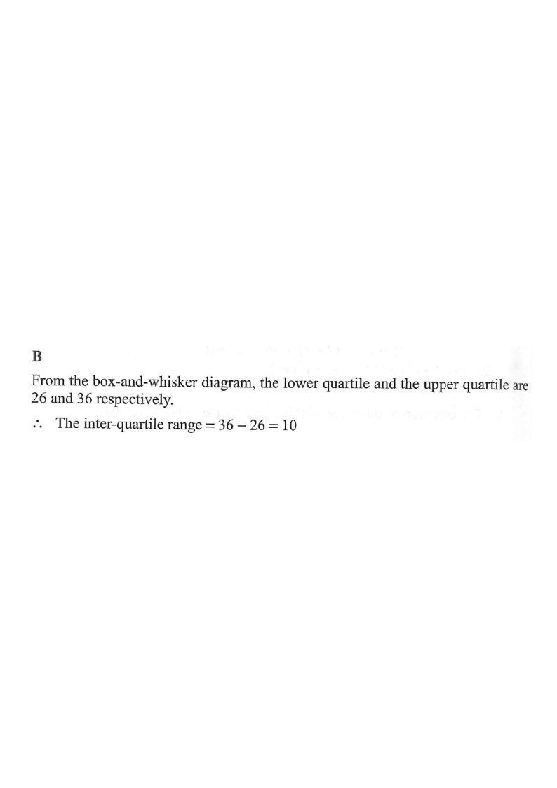

Five-number summary — min = 22, Q₁ = 26, median = 32, Q₃ = 36, max = 42.
Question. The box-and-whisker diagram below shows the distribution of the ages of a group of researchers. Find the inter-quartile range of the distribution.

A box-and-whisker diagram marks five values along the axis. The left edge of the box is the lower quartile and the right edge of the box is the upper quartile.
From the diagram: the left edge of the box lies at 26 and the right edge of the box lies at 36.
\[ Q_1 = 26, \qquad Q_3 = 36 \]
The inter-quartile range (IQR) measures the spread of the middle 50 % of the data:
\[ \text{IQR} = Q_3 - Q_1 \]
\[ \text{IQR} = 36 - 26 = 10 \]
So the ages of the middle 50 % of the researchers span a range of 10 years.
Option C, $20$, is $42-22$ (the range, not the IQR). Option D, $34$, is $42-8$ or similar mis-readings. Option A, $5$, is a mis-reading of the box edges.
Question. A box-and-whisker diagram shows a minimum of \(12\), a lower quartile of \(18\), a median of \(24\), an upper quartile of \(31\) and a maximum of \(45\). (a) Find the inter-quartile range. (b) Find the range, and state which of the two measures describes the middle \(50\%\) of the data.